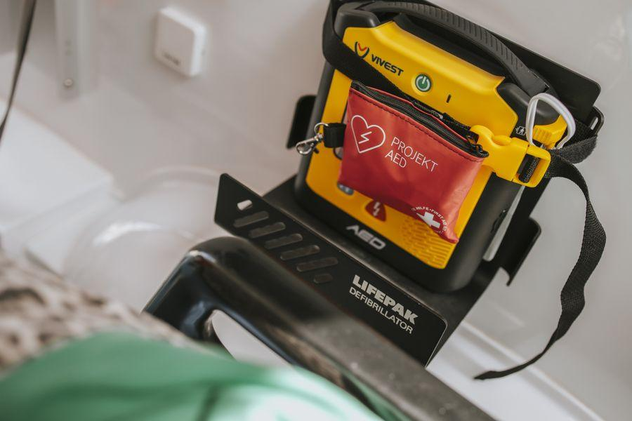

🎓 Kursy krok po kroku
ekran po ekranie, czytanie na głos, quiz📚 Wersje PDF do druku
wszystkie w bibliotece PDF
ekran po ekranie, czytanie na głos, quiz📚 Wersje PDF do druku
wszystkie w bibliotece PDF
Dotknij leku: wszystko na jednym ekranie – mechanizm, wskazania, dawkowanie dorosłych i dzieci, przygotowanie, działania niepożądane i podsumowanie.
💊
AdenozynaKilka sekund, które przerywają częstoskurcz nadkomorowy
🌿AdrenalinaNajważniejszy lek w torbie ratownika — od NZK po anafilaksję
❤️AmiodaronAmiodaroni hydrochloridum — lek antyarytmiczny w praktyce zespołu
❤️AtropinaAtropini sulfas — odcięcie nerwu błędnego od serca
💊BudezonidBudesonidum — glikokortykosteroid w nebulizacji
💊DeksametazonDexamethasoni phosphas — długo działający glikokortykosteroid
🧠DiazepamDiazepamum — klasyczna benzodiazepina w drgawkach i pobudzeniu
🌀DrotawerynaDrotaverini hydrochloridum (No-Spa) — rozkurcz mięśni gładkich
💉FentanylFentanylum — silny opioid o szybkim i krótkim działaniu
🔄FlumazenilFlumazenilum — antagonista benzodiazepin
💊FurosemidFurosemidum — diuretyk pętlowy
🍬GlukagonGlucagoni hydrochloridum — hormon podnoszący glikemię
💧GlukozaGlucosum 5%, 10%, 20% — płyn, nośnik i odtrutka
💧Glukoza 5%Płyn do rozcieńczania leków i nawadniania
🩸HeparynaHeparinum natricum — heparyna niefrakcjonowana (UFH)
💊HydrokortyzonHydrocortisonum — naturalny glikokortykosteroid
🧪Hydroksyetyloskrobia (HES)Koloid syntetyczny – dziś praktycznie wycofany
💊HydroksyzynaHydroxyzini hydrochloridum — przeciwhistaminowy lek uspokajający
💊IbuprofenIbuprofenum — niesteroidowy lek przeciwzapalny
🫁Ipratropium⚠️ Spoza listy RM – na zlecenie lekarza. Ipratropii bromidum — wziewny lek cholinolityczny
💊Izosorbidu monoazotanAzotan doustny – zapobiega bólom dławicowym
🩸KaptoprylInhibitor ACE na nagły wzrost ciśnienia
💊KetoprofenKetoprofenum — niesteroidowy lek przeciwzapalny do podania pozajelitowego
🌿KlemastynaClemastinum — lek przeciwhistaminowy w reakcjach alergicznych
🧠KlonazepamClonazepamum — benzodiazepina w drgawkach i stanie padaczkowym
❤️KlopidogrelClopidogrelum — drugi lek przeciwpłytkowy w ostrym zespole wieńcowym
❤️Kwas acetylosalicylowyAcidum acetylsalicylicum · ASA — pierwsza tabletka w ostrym zespole wieńcowym
🩹Kwas traneksamowyHamuje rozpad skrzepu w ciężkim krwawieniu
❤️LidokainaLidocaini hydrochloridum — lek miejscowo znieczulający i przeciwarytmiczny
💊MannitolMannitolum — diuretyk osmotyczny
🩹MetamizolMetamizolum natricum (Pyralgina) — nieopioidowy lek przeciwbólowy
🤢MetoklopramidMetoclopramidi hydrochloridum — lek przeciwwymiotny i prokinetyczny
💊MetoprololMetoprololi tartras — kardioselektywny β-bloker
🧠MidazolamMidazolamum — krótko działająca benzodiazepina
💉MorfinaMorphini sulfas — wzorcowy opioidowy lek przeciwbólowy
🔄NaloksonNaloxoni hydrochloridum — odtrutka na opioidy
💊NitroglicerynaGlyceroli trinitras — azotan organiczny
💊NoradrenalinaNorepinephrinum — wazopresor pierwszego wyboru we wstrząsie
🌀PapawerynaPapaverini hydrochloridum — lek rozkurczający mięśnie gładkie
🩹ParacetamolParacetamolum — lek przeciwbólowy i przeciwgorączkowy
💧Płyn RingeraKrystaloid do uzupełniania płynów
❤️PrasugrelLek przeciwpłytkowy w ostrym zespole wieńcowym
💧PWE – płyn wieloelektrolitowyZbilansowany krystaloid do uzupełniania płynów
🫁SalbutamolSalbutamolum — krótko działający lek rozszerzający oskrzela
💊Siarczan magnezuMagnesii sulfas — elektrolit, który działa jak lek
💧Sól fizjologicznaNatrii chloridum 0,9% — najczęściej podawany płyn
🤢TietylperazynaThiethylperazinum (Torecan) — przeciwwymiotna pochodna fenotiazyny
❤️TikagrelorTicagrelorum — lek przeciwpłytkowy w ostrym zespole wieńcowym
🫁Tlen medycznyLek jak każdy inny – dawkuj według saturacji
🩸UrapidylUrapidilum (Ebrantil) — dożylny lek obniżający ciśnienie
💊Wodorowęglan soduNatrii hydrogenocarbonas 8,4% — bufor i odtrutka
Koło pediatryczne
Wybierz wiek dziecka: masa, rurka, i-gel, energia defibrylacji i dawki leków – każda wartość z wzorem.
→ Otwórz koło
Ćwiczenia, scenariusze i fiszki
Dziecko 18 kg, adrenalina – ile ml? Liczysz, sprawdzasz i widzisz całe rozwiązanie. Plus wzory: ml/h, krople, procenty.
→ Ćwicz


Ważne: materiały mają charakter edukacyjny i nie zastępują aktualnych wytycznych ERC/PRC, rozporządzeń Ministra Zdrowia ani procedur Twojego pracodawcy. Przed podaniem leku zawsze sprawdź aktualną ChPL. Błąd w treści? Napisz: biuro@medkrak.pl